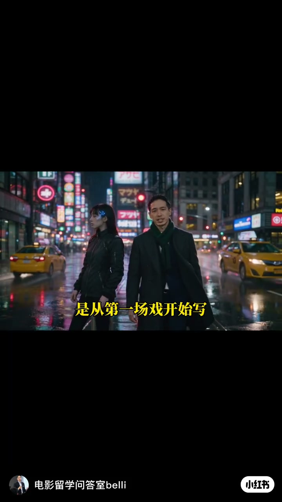
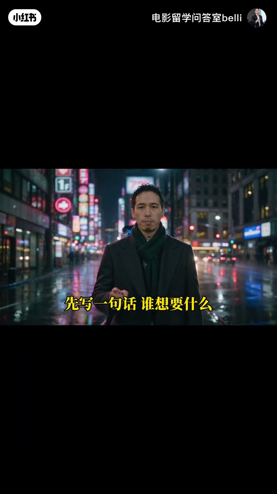
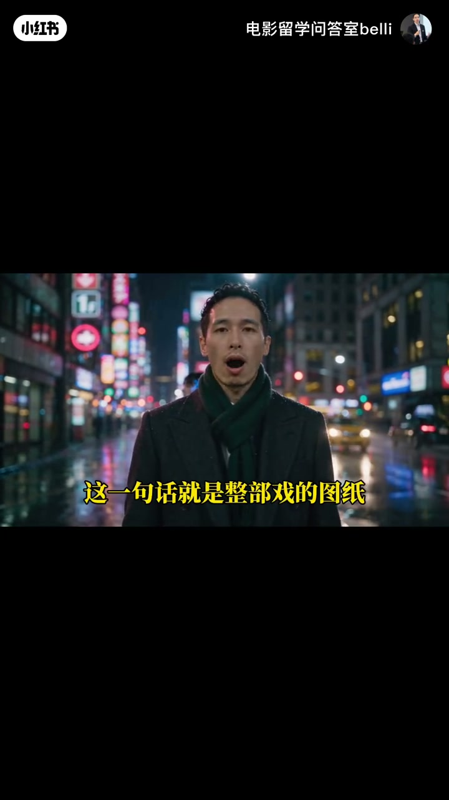
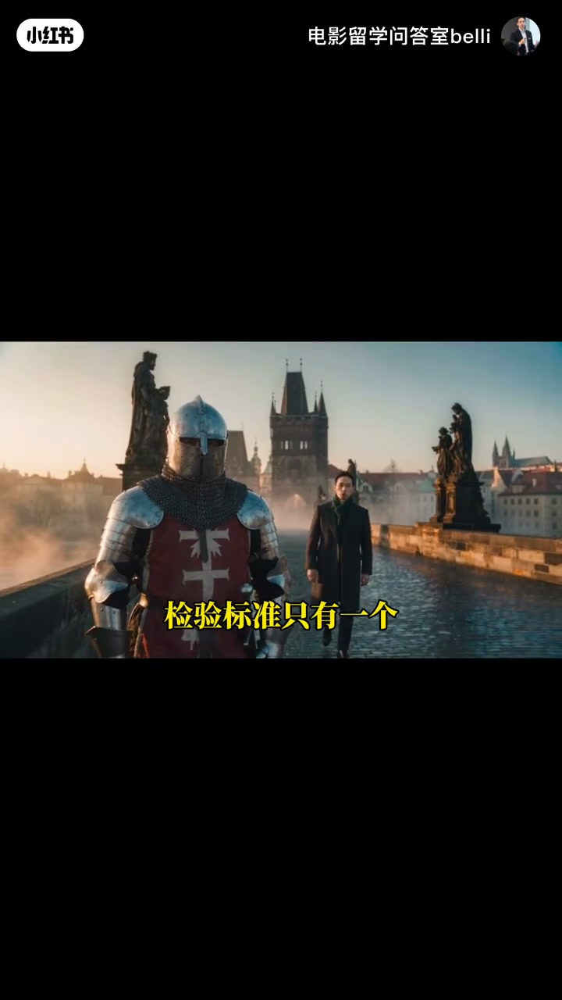
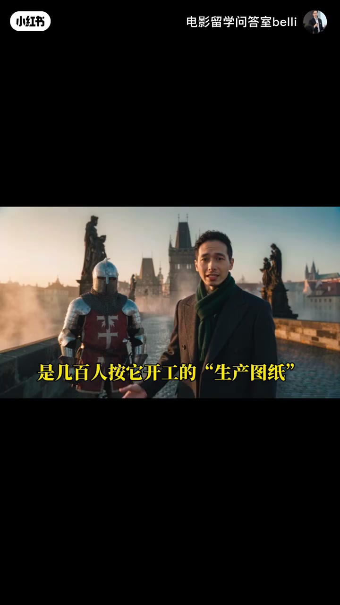

内容要点
电影问答室belli用30秒讲清：别从第一场戏开写，先定故事根基——谁、想要什么、被什么挡住。检验标准只有一个：这一场有没有改变人物处境。
知识结构
[00:00–00:05]
开场误区
很多人从第一场戏动笔；专业编剧不是。
[00:05–00:13]
故事根基
先写一句话：谁想要什么、被什么挡住；缺一样立不住。
[00:13–00:22]
删戏标准
每场是否改变人物处境；没有就删。
[00:22–00:27]
图纸观
剧本不是文学，是几百人按它开工的生产图纸。
总结
一句话图纸（人物—欲望—阻碍）展开全剧；无效戏份直接删；AI能出画面，戏剧判断仍在人。
口播约27秒；文案侧补充「工具是副手、故事根是人」。Whisper medium 已简体校正。
00:00–00:05别从第一场开写
开场直指常见误区：写剧本上来就铺第一场戏。专业做法是先停笔，把故事根基钉死。
「很多人写剧本，是从第一场戏开始写；专业编剧不是。」

[00:02] 误区：上来就写第一场戏
Trap: diving straight into scene one
00:05–00:13一句话图纸：谁·想要·阻碍
先写一句话：谁想要什么、被什么挡住。缺一样，故事就立不住。这句话是整部戏的图纸，之后每一场都是它的展开。
「这一句话就是整部戏的图纸；之后每一场都是它的展开。」

[00:07] 根基三要素：谁 · 想要什么 · 被什么挡住
Root triad: who · wants what · blocked by what

[00:11] 一句话＝整部戏的图纸，后场皆展开
One sentence is the blueprint; every scene unfolds it
00:13–00:22检验：有没有改变处境
检验标准只有一个：这一场戏有没有改变人物的处境。没有改变，就删。把「好看」换成「有效」。

[00:16] 唯一检验：这一场有没有改变人物处境
Only test: does the scene change the character's situation?
[00:20] 没有改变处境 → 直接删戏
No change in situation → cut the scene
00:22–00:27剧本是生产图纸
收束：剧本不是文学，是几百人按它开工的生产图纸。工具（含AI画面）会迭代，但戏剧判断与人物挣扎无法外包——故事的根永远是人。

[00:25] 剧本是几百人开工的生产图纸，不是纯文学
A script is a production blueprint for a crew, not pure literature
完整转录（15段）
Whisper medium · 中文 · 已做术语校正，仍可能有识别误差。
很多人写剧本
是从第一场戏开始写
专业编剧不是
先写一句话
谁想要什么被什么挡住
缺一样故事就立不住
这一句话就是整部戏的图纸
之后每一场都是它的展开
检验标准只有一个
这一场戏
有没有改变人物的处境
没有改变就删
剧本不是文学
是几百人
按它开工的生产图纸